Brain-Inspired Autonomous Systems
Systems that emulate neurological principles — from event-driven sensing to neuromorphic control for spacecraft and first-responder robotics.
01 / Bio
Kyongsik Yun is a technologist at NASA's Jet Propulsion Laboratory, California Institute of Technology, and a senior member of the American Institute of Aeronautics and Astronautics (AIAA). His research focuses on brain-inspired autonomous systems and multi-modal heterogeneous time-series modeling, advancing machine learning in computer vision and natural-language processing. He has contributed to the Department of Defense and Department of Homeland Security through development and deployment of deep-learning technologies.
His current work includes flight software engineering for the Mars Sample Return mission's sample retrieval lander, and onboard software for next-generation avionics hardware (Snapdragon and HPSC). He also leads development of SLIM (Software Lifecycle Improvement & Modernization), an open-source initiative by NASA's Advanced Multi-Mission Operations System (AMMOS) for automated integration of software best practices using large language models — deployed across MGSS, HySDS, F Prime, Opera, and SDS.
Kyongsik studied computational neuroscience at KAIST (BS, PhD) and computation & neural systems at Caltech (postdoc). His awards include the JPL Voyager Award, NASA Innovator Award, JPL Explorer Award, Marie Curie Fellowship for Neuroscience, IFMBE Young Investigator Award, and the SfN Hot Topic Award. He co-founded two biotechnology companies — Ybrain and BBB Technologies — which raised $45M in investment funding.
02 / Research Focus
Systems that emulate neurological principles — from event-driven sensing to neuromorphic control for spacecraft and first-responder robotics.

Fusing heterogeneous streams (InSAR, groundwater, telemetry, DSN) into unified forecasting and anomaly-detection pipelines.

Deep-learning computer vision and NLP — applied to wildfire tracking, Mars EDL, medical classification, and large-scale software engineering (SLIM/LLMs).
Selected Awards
03 / News
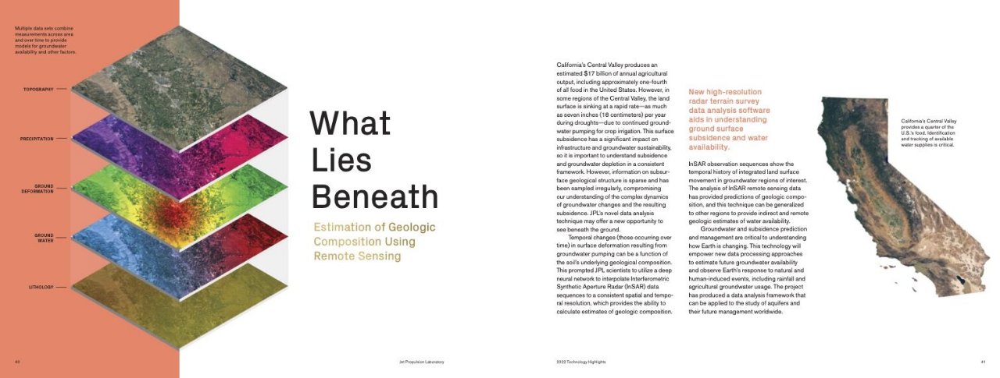
Remote estimation of geologic composition selected as one of JPL's Technology Highlights.
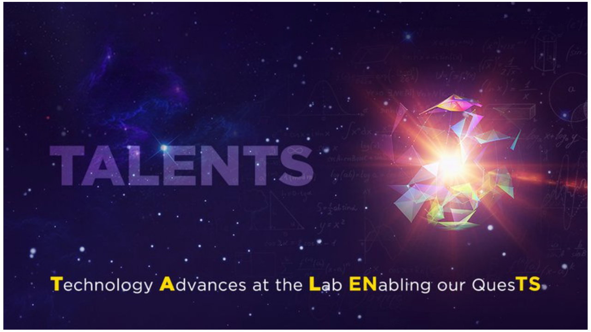
Featured for the development of a soil-composition estimation model.
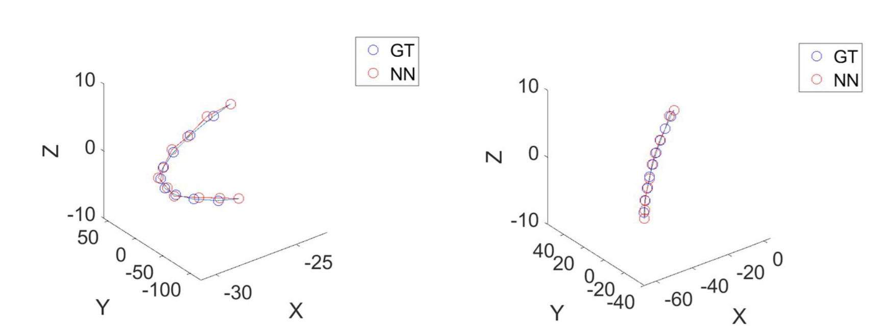
Deep-learning numerical model demonstrating 1000× the computational efficiency of the mathematical counterpart.
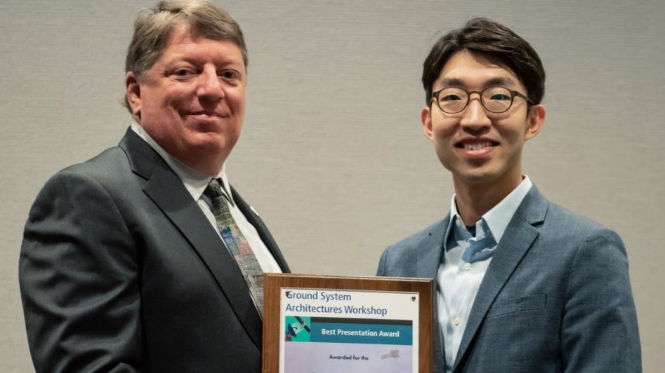
Transforming unstructured data into insight for anomaly detection in exploration ground systems.
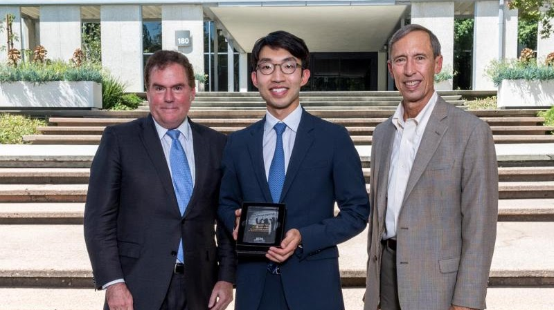
Scientific and technical excellence in deploying new technologies for operations at Kennedy Space Center.
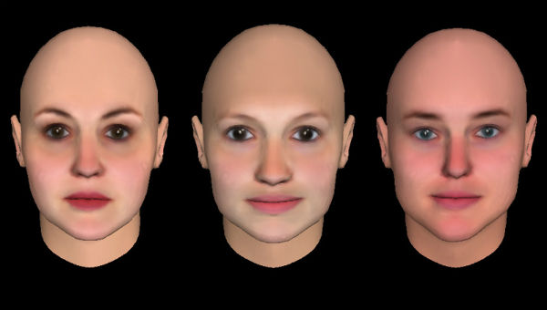
Electronic scalp stimulation makes faces appear more attractive (Science / New Scientist).
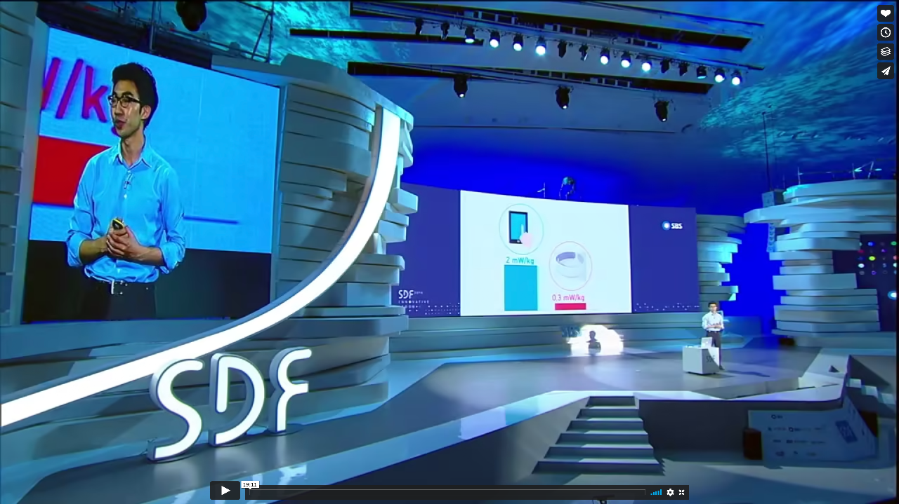
Wearable technology for Alzheimer's disease.
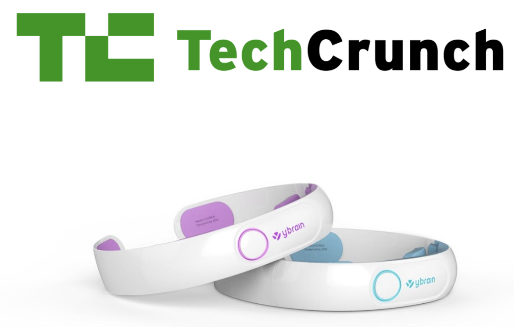
Brain signal-processing platform and wearable device, with large-scale Class III medical device trials (TechCrunch).
A measurable connection between bonding and matched movements (Scientific Reports).
04 / Projects & Publications
Full list with citation counts and PDFs on Google Scholar. Each title below links to the paper on Scholar.
NASA AMMOS · automated integration of software best practices using LLMs
Flight software · Snapdragon & HPSC
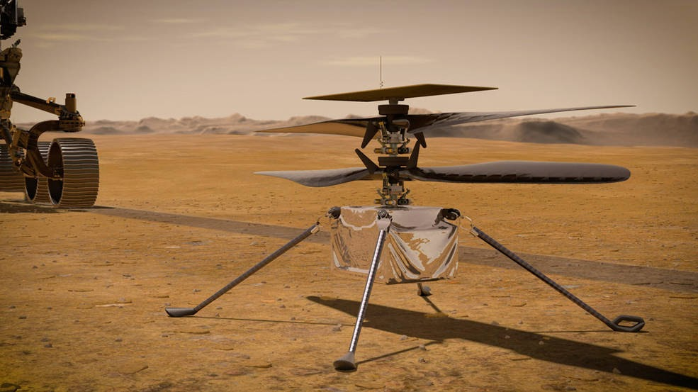
trajectory optimization · DSN anomaly detection · hardware acceleration
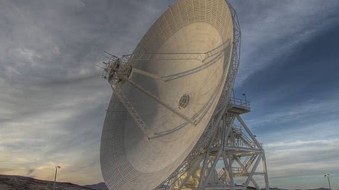
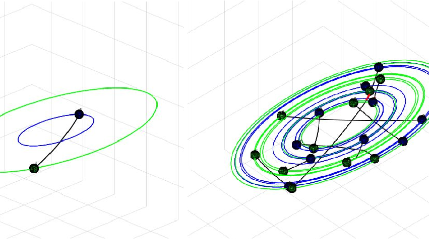
multi-sensor ML · self-supervised segmentation · land deformation
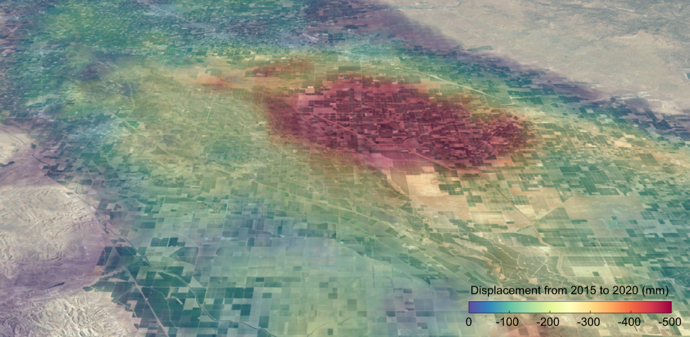
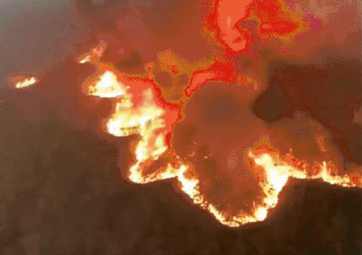
fire/smoke detection · AR · speech recognition · collision warning
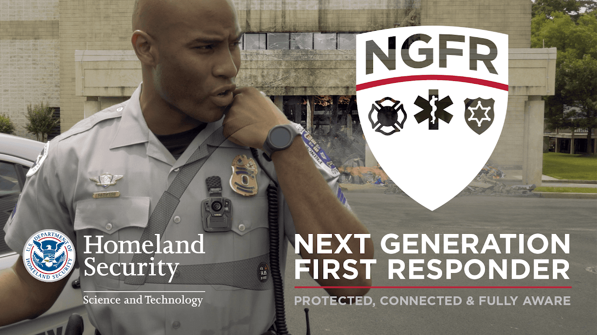
clinical prediction · imaging · surveys · COVID-19
tACS · tDCS · clinical mechanisms
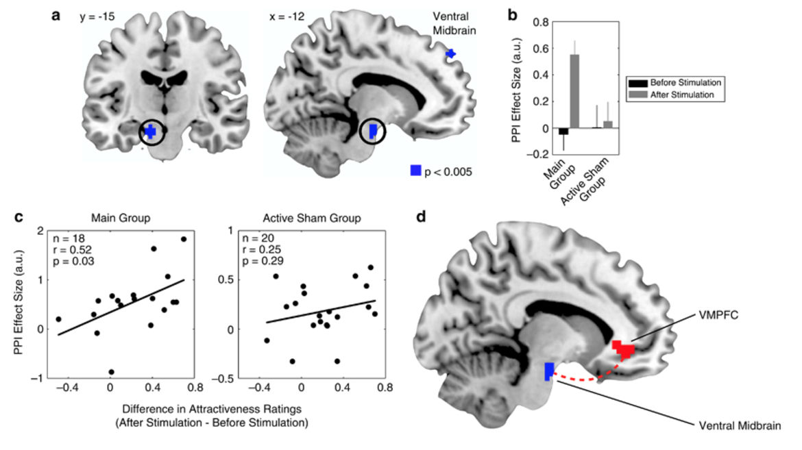
EEG hyperscanning · BCI · neural synchrony · decision-making
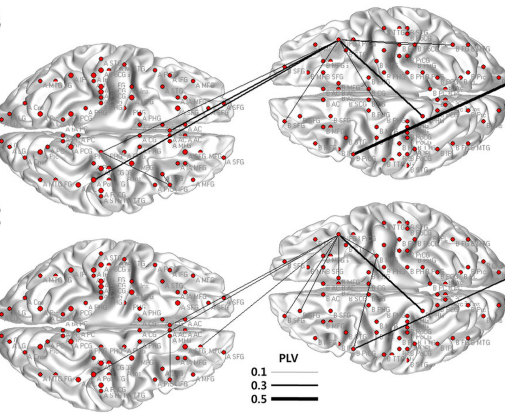
05 / Outreach & Contact
Invited talks and media appearances have included the Seoul Digital Forum, New Scientist features on noninvasive brain stimulation, and JPL TALENTS.
kyongsik.yun@jpl.nasa.gov
Google Scholar ·
LinkedIn ·
JPL profile